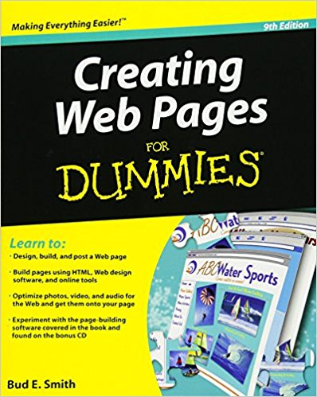

My name is Phan Ngọc Minh Hằng.
I am a final-year student majoring in
Applied Mathematics.
I am interested in web design, technology and digital learning.
I enjoy discovering how websites are structured and how meaningful
content can be organized clearly for users.
My current goal is to improve my knowledge of web development
and continue learning Front-end Development
after building a strong foundation in HTML.
HTML structure reference used while learning
web page organization.
This project is a collection of HTML pages created for the
WD Lab01 assignment. It demonstrates heading hierarchy,
links, images, semantic HTML, tables, forms
and internal navigation.
The project is built with HTML only
and runs through XAMPP and Apache on localhost.
Project 02 - Personal Learning Notes

A web design learning resource used to represent
my self-study journey.
This mini project represents my personal learning notes
about web design fundamentals.
It focuses on page structure, learning resources,
HTML knowledge and my study orientation
for future Front-end Development.
It also reflects my habit of combining structured thinking
from Applied Mathematics with organized learning
in technology.
My short-term goal is to improve my knowledge
of HTML, CSS and JavaScript so that I can build
complete and user-friendly websites.
I also want to become more confident
in organizing content, designing interfaces
and solving problems during the development process.
In the future, I want to continue learning
Front-end Development and apply both technical skills
and logical thinking from Applied Mathematics
to real projects.